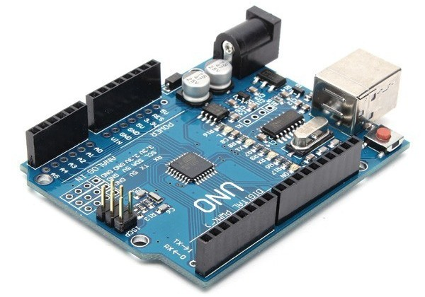
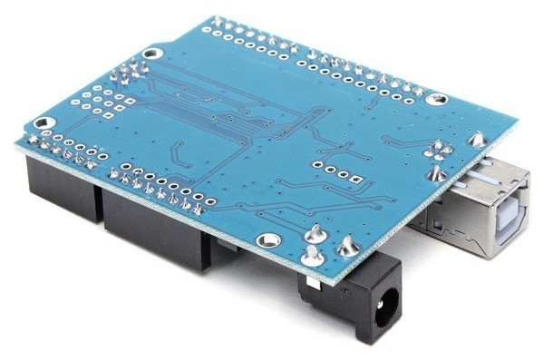
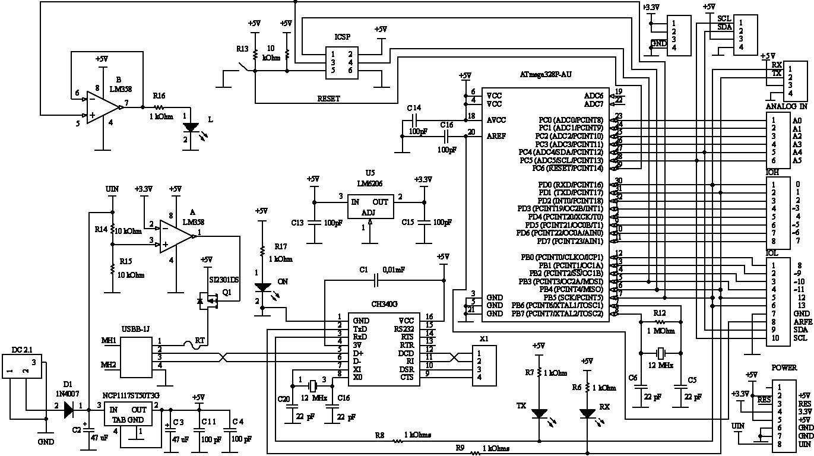
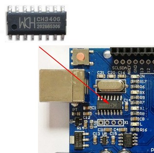
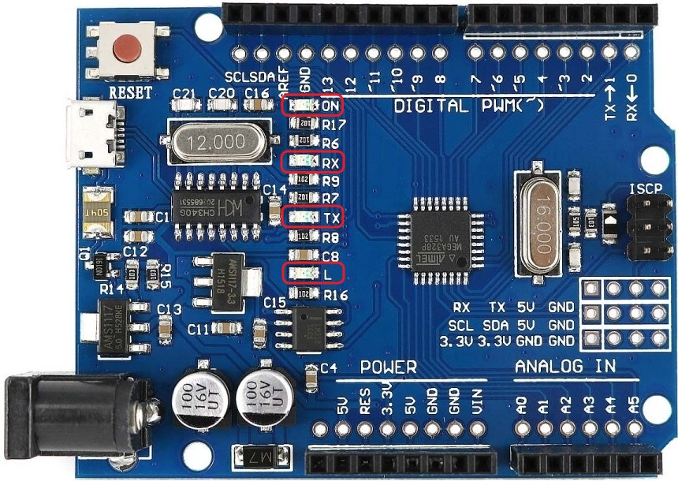

Контроллер Arduino UNO R3 CH340
Это функциональный аналог основного самого популярного модуля Arduino UNO R3 содержащего микроконтроллер Atmega328. Центральный модуль микроконтроллера входящий в широкий класс устройств Arduino. Микроконтроллер модуля программируется через USB без использования специального программатора. Arduino Uno R3 CH340 выполнен с применением микросхем в планарном исполнении: МК Atmega328P-AU и преобразователь интерфейса USB-UART микросхема CH340G. Благодаря применению микросхемы микроконтроллера в SMD-корпусе возросла нагрузочная способность выходов модуля по току. Фирма Atmel ограничивает суммарный ток нагрузки выводов микроконтроллера расположенных с одной стороны корпуса микросхемы. Благодаря расположению выводов с четырех сторон нагрузочная способность модуля возросла.


Характеристики
- Напряжения питания:
- подаваемое на соединитель USB - 5 В
- через круглый соединитель - 7 ... 12 В
- Выходной ток стабилизатора 3,3 В - 50 мА
- Память :
- Flash - 32 КБайт за исключением 0,5 занятых загрузчиком
- SRAM - 2 КБайт
- EPROM - 1 КБайт
- Тактовая частота 16 МГц
Характеристики модуля Arduino Uno R3 CH340 повторяют характеристики Arduino Uno R3. Во многом они определены типом использованного микроконтроллера.

Arduino Uno R3 CH340 имеет разветвленную схему питания, в которую входят следующие основные компоненты: гнезда DC2.1 и USBB-1J, микросхемы NCP1117ST50T3G и LM358, транзистор SI2301DS(Q1). В DC2.1 вставляется штекер DJK-02A блока питания, центральный контакт – положительный полюс. Другое подключение питания проиcходит через USB-разъем тип В. Предохранитель RT защищает USB-порт компьютера от перегрузки. Он разрывает соединение, если от USB-порта потребляется ток более 500 мА, и восстанавливает соединение после остывания корпуса. Через диод D1 питание поступает на микросхему NCP1117ST50T3G стабилизатор напряжения 5 В. С его выхода поступает стабилизированное напряжение питания элементов схемы Arduino Uno R3 CH340. Микросхема LM358 анализирует уровень напряжение поступающего от лабораторного блока питания. Она работает так: если напряжение на входе "+" больше чем на входе "–", то на выходе будет напряжение питания микросхемы, иначе на ее выходе напряжение равно нулю. Благодаря делителю напряжения на резисторах R14 и R15 при напряжении на контакте 1 диода 1n4007 более 6,6 В на выходе LM358 будет 5 В, иначе 0 В.
Q1 SI2301DS – силовой Р-канальный MOSFET транзистор. Отпирающим для него является отрицательное относительно истока напряжение, приложенное к затвору и превышающее его пороговое. В Р-канальном транзисторе ток вытекает из стока в схему при приложенном отрицательном напряжении затвор-исток, сток соединен с отрицательным полюсом схемы. В состав транзистора входит диод. При открытом транзисторе ток протекает в обоих направлениях.
Рассмотрим как работает схема питания. Допустим к Arduino Uno R3 CH340 подключен только внешний блок питания напряжением 9 В. Тогда с выхода стабилизатора NCP1117ST50T3G в схему поступает 5 В. Если модуль подключен только к USB порту, то ток питания течет через предохранитель RT и диод в корпусе транзистора Q1. Теперь представим ситуацию когда подключены блок питания и USB порт. На линии питания положительного напряжения присутствует 5 В от стабилизатора. Ток от USB порта должен течь через диод, но на диоде происходит падение напряжения, а USB также содержит 5 В. Поэтому, проходя через диод напряжение от USB снизится, а на линии уже присутствует 5 В стабилизатора. Поэтому ток от USB течь не будет или скорее всего его величина будет очень малой – он может протекать только от большего к меньшему, но не наоборот. Так происходит автоматическое прекращение потребления энергии от USB порта при работе блока питания.
Если на контакте 1 диода 1n4007 напряжение снизится до уровня 6,5 В или менее, то на выходе компаратора на МС LM358 напряжение станет равным нулю, транзистор Q1 откроется и напряжение питание схемы будет поступать на контакт разъема USB. Так как там 5 В и питание USB тоже 5 В, то заметный ток не будет протекать ни в каком направлении. Возможны небольшие токи в следствии невозможности обеспечить в двух приборах абсолютно идентичных уровней 5 В. Поэтому руководствуясь принципом “береженного бог бережет” запрещается использовать блоки питания с выходным напряжением ниже 7 В при одновременном подключении к USB.
Функция компаратора на МС LM358 – сформировать сигнал при снижении питания ниже критического. Это используется при питании устройства на базе Arduino Uno R3 CH340 от батарей. Если вместо блока питания готовое устройство питается от батарей, то необходимо следить за их разрядкой по уровню выходного напряжения. В готовом устройстве нет подключения к ПК и соединитель USB можно использовать в своих целях. При разряде батарей напряжение снижается, компаратор определяя это открывает транзистор Q1 и на контакт питания соединителя порта USB поступает напряжение. Это используется для определения разряда батарей различными устройствами прибора.

Микросхема CH340G обеспечивает связь с ПК через порт USB. Для удобства программирования внешних устройств, через интерфейс RS232, на плате располагается разъем X1. Напряжение 3,3 В обеспечивает стабилизатор U5 LM6206. К резистору R13 подключена кнопка сброс. С контактами МК интерфейса SPI соединен разъем для внутрисхемного программирования ICSP. Выводы МК подключены к соединителям находящимся по краям платы. Второй операционный усилитель входящий в микросхему LM358 обозначенный в схеме В соединен с контактом 13 гнезда IOL. Он обеспечивает работу индикатора L и предохраняет выход МК от токовой нагрузки светодиода.
Для отображения режима работы на плате Arduino Uno R3 CH340 расположены четыре светодиода (рис. 4):
- ON – включение питания;
- RX – передача данных;
- TX – передача данных;
- L – контакт 13.
